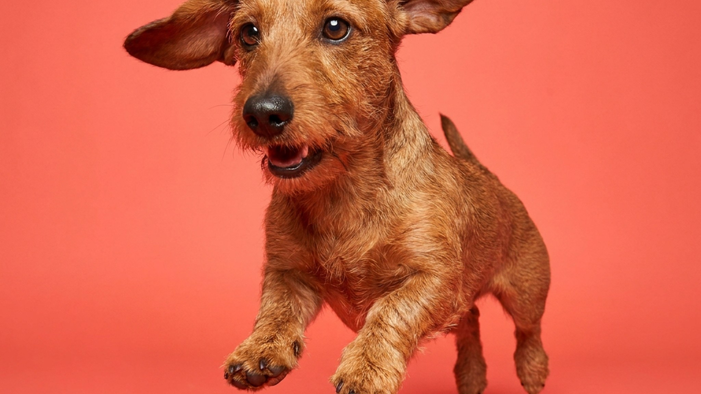

Русская гончая может гнать зверя часами, не сбиваясь со следа, и оповещать о нём голосом, который слышно за километр. Это рабочая охотничья порода, и без понимания этого жизнь с ней превращается в испытание. Ниже разбор того, что требует эта собака, как с ней работать и кому она действительно подойдёт.
🐾 Ваш питомец — русская гончая?
Заведите профиль в AnimaLife: приложение запомнит породу, возраст и вес и будет подсказывать по уходу именно для неё. Вопросы AI-ветеринару — круглосуточно и бесплатно.
Завести профиль → Завести в MAX →
У вас iPhone? AnimaLife есть в App Store
Русская гончая выведена для парфорсной охоты на зайца и лису. Три рабочих качества, которые веками отбирались в породе, никуда не делись у современных собак.
Русская гончая относится к породам с высокой потребностью в движении. Взрослая собака требует минимум полтора-два часа активной нагрузки в день: не неспешной прогулки, а бега, работы по следу или занятий с элементами поиска. Без этого накапливается возбуждение, которое выходит в разрушительное поведение дома и избыточный лай.
Содержание в городской квартире без загородных выездов для русской гончей плохой вариант для обеих сторон. Порода выведена под частный дом с выходом на природу или охотничьи угодья с регулярным использованием собаки по назначению. Если охоты нет, нагрузку компенсируют велосипедными пробежками, манинасом или трекинговыми маршрутами.
Русская гончая умна и хорошо обучается в спокойной обстановке. Со следом в носу она обучению недоступна. Работать с породой нужно до того, как нос нашёл что-то интересное, а не после.
Порода отзывчива и привязана к хозяину, не склонна к доминированию. Жёсткое давление даёт обратный результат: гончая замыкается. Позитивное подкрепление и короткие тренировки в среде без отвлекающих запахов составляют базу воспитания. Отзыв тренируют отдельно и долго: это вопрос безопасности собаки.
Шерсть у русской гончей средней длины, плотная, с подшёрстком. Линяет два раза в год; в период линьки вычёсывать нужно ежедневно. В остальное время достаточно раза в неделю. Купать по необходимости, примерно раз в месяц-два или после работы на природе.
Уши осматривать еженедельно: длинные висячие уши хуже вентилируются. При регулярных выходах в лес и поле осматривать лапы и кожу после каждой прогулки.
Подходит: охотникам, активным людям с доступом к природе, владельцам загородных домов, тем, кто готов ежедневно давать серьёзную физическую нагрузку.
Не подходит: городским жителям с обычным ритмом прогулок, семьям с кошками без опыта совместного содержания, тем, кто впервые берёт собаку и рассчитывает на спокойного компаньона, и соседям с тонкими стенами.
🐾 У вас русская гончая?
AnimaLife соберёт уход под породу: к каким болезням есть склонность, что проверять по возрасту, чем кормить и когда пора к врачу. Бесплатно, прямо в мессенджере.
Собрать план ухода → Собрать в MAX →
У вас iPhone? AnimaLife есть в App Store
🐾 Понравился разбор?
Подпишитесь на канал — каждый день разбираем по одному тревожному симптому у кошек и собак: что в пределах нормы, а когда пора к врачу. Подпишитесь, чтобы не пропустить разбор, который может спасти здоровье вашего питомца.